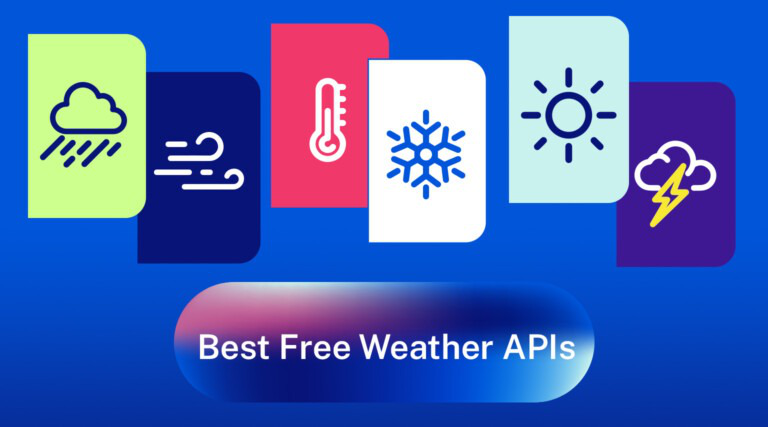

Блог » API » API Best Weather
Топ-6 лучших бесплатных API погоды для доступа к глобальным данным о погоде в 2023 году
Келли Арельяно //17 февраля 2023 г.
API-интерфейсы погоды используются в широком спектре приложений, таких как интернет-издания, предоставляющие местные сводки погоды, туристические веб-сайты, показывающие обзор текущих условий в каждой стране назначения, системы домашней автоматизации, отслеживающие температурные тенденции для более эффективного использования энергии, а также приложения для смартфонов, помогающие люди планируют свои мероприятия на свежем воздухе в соответствии с самым последним прогнозом. Ознакомьтесь с другими сценариями использования API погоды .
Большинство погодных API предлагают полный набор функций, позволяющих разработчикам настраивать поведение своих приложений на основе предпочтений пользователя или прошлых моделей использования. Это облегчает им запуск своевременных обновлений при необходимости, а также обеспечивает большую гибкость при создании инновационных способов взаимодействия с данными о погоде, собранными поставщиком услуг API.
API-интерфейсы погоды также предоставляют другие полезные преимущества, такие как повышенная точность благодаря постоянным процессам обеспечения качества, простая интеграция с популярными средами разработки, масштабируемость, надежность, подробная документация и, наконец, что не менее важно, доступность благодаря щедрым бесплатным планам, предлагаемым некоторыми провайдерами.
В этом сообщении блога рассказывается о нескольких наиболее популярных БЕСПЛАТНЫХ API-интерфейсах погоды в Rapid API Hub, которые разработчики используют для создания инновационных веб-приложений и мобильных погодных приложений. Имейте в виду, что не все потоки данных о погоде одинаковы – некоторые из них более точны, чем другие, а некоторые содержат больше подробностей. Найдите в этом списке подходящий API, отвечающий вашим потребностям!
Прежде чем мы представим 6 лучших бесплатных API погоды на 2023 год, давайте ответим на некоторые вопросы, которые могут у вас возникнуть по поводу API погоды:
Что такое API погоды?
API-интерфейсы погоды, или интерфейсы прикладного программирования , — это сервисы, которые обеспечивают доступ в режиме реального времени к данным о погоде и прогнозам. Эти API позволяют разработчикам создавать приложения для своих пользователей, которые могут получать доступ к последней информации о погоде из различных источников. С помощью API-интерфейсов погоды разработчики могут получить доступ к текущим условиям, почасовым и ежедневным прогнозам, а также к долгосрочным прогнозам с помощью всего лишь нескольких строк кода. Это позволяет им создавать многофункциональные приложения, предоставляющие актуальную информацию о температуре, осадках, скорости и направлении ветра, а также других важных погодных переменных.
Как получить ключ API?
При подключении API к проекту или приложению у вас должен быть ключ API для аутентификации вашего запроса. При создании приложения в RapidAPI генерируется ключ API (X-RapidAPI-Key), специфичный для этого приложения. Вы можете просматривать аналитику на основе вызовов API, которые вы совершаете с помощью этого ключа приложения. RapidAPI можно бесплатно присоединиться и начать работу. Зарегистрируйтесь бесплатно сегодня!
Какой API бесплатной погоды лучше всего?
Мы собрали 6 лучших бесплатных API погоды в крупнейшем в мире API Hub . Вы также можете просмотреть коллекцию Top Weather API от Rapid .
Вот 6 лучших бесплатных API погоды на 2023 год:
1. WeatherAPI.com
Оценка популярности: 9,9/10.
WeatherAPI.com — это мощный полностью управляемый поставщик API погоды и геолокации, который предоставляет обширные API, которые варьируются от прогнозов погоды в реальном времени, исторических данных о погоде, данных о качестве воздуха, массовых запросов, поиска IP-адресов и астрономии до спортивных состязаний, часовых поясов и геолокация.
WeatherAPI.com предоставляет текущие и 14-дневные данные о погоде, прогноз погоды, исторические данные о погоде и географические данные через. REST API в формате JSON.
Weather API также предоставит информацию о часовом поясе, астрономические данные и данные о географическом местоположении.
Данные о погоде предоставляются в сотрудничестве с несколькими поставщиками данных, государственными и метеорологическими агентствами.
2. Прогноз
Оценка популярности: 9,9/10.
В течение последних 15 лет ForecastAPI собирает и анализирует данные о погоде от собственного метеорологического подразделения, чтобы предоставить наиболее точный прогноз для любой точки мира. С помощью этого API вы можете обогатить и улучшить свой веб-сайт или инициировать любое событие на основе высокоточного прогноза погоды.
Этот API предоставляет прогнозы погоды по всему миру: для заданного местоположения (широта/долгота) вы можете получать прогнозы погоды на ежедневном (бесплатном) или почасовом уровне на следующие 16 дней, а также исторические данные метеостанций за период до 1 года.
3. Метеостат
Оценка популярности: 9,8/10.
API Meteostat JSON — это веб-сервис, который предоставляет наблюдения за погодой, историческую статистику и долгосрочные климатические данные для тысяч метеостанций и мест по всему миру.
Метеостат — один из крупнейших поставщиков открытых данных о погоде и климате. Получите доступ к долгосрочным временным рядам тысяч метеостанций и интегрируйте данные Meteostat в свои продукты, приложения и рабочие процессы.
API Meteostat JSON обеспечивает простой доступ к большому архиву исторических данных о погоде и климате. Записи запрашиваются по метеостанции или географическому местоположению и могут быть отфильтрованы, указав диапазон дат и другие дополнительные параметры.
4. Вставка погоды
Оценка популярности: 9,7/10.
Weather Embed — это очень простой API на основе URL-адресов, который предлагает изображение PNG для встраивания. Варианты использования включают информационные бюллетени отелей, показывающие погоду при заезде или обмен текущей погодой в Slack Bot.
5. Погода по API – Ninjas
Оценка популярности: 9,9/10.
API Ninjas Weather API предоставляет самую свежую информацию о погоде для любого города или географического местоположения в мире. Получите текущие данные о погоде по городу, почтовому индексу или координатам геолокации (широта/долгота).
6. Визуальная погода при пересечении
Оценка популярности: 9,8/10.
API Visual Crossing Weather обеспечивает высокопроизводительный, недорогой и мгновенный доступ как к историческим записям погоды, так и к данным прогнозов погоды. Доступные погодные показатели включают температуру, количество осадков, скорость ветра (включая порывы), снег, воспринимаемую температуру, влажность и давление. Данные истории погоды доступны для часовых и дневных уровней, а также глобальные прогнозы для часовых, дневных и 12-часовых (день/ночь) периодов. Каждый вызов API позволяет использовать несколько местоположений в каждом запросе, чтобы максимизировать эффективность и минимизировать ваши затраты. API подходит для периодического использования в общедоступных корпоративных развертываниях.
Какой API погоды лучше всего подходит для вашего приложения?
Хотя большая часть данных о погоде, предоставляемых этими API, схожа, существуют различия в форматах дней и времени для прогнозов погоды, количестве лет назад для исторических данных и типах предоставляемой информации о погоде.
Хотя API погоды, перечисленные в этой статье, обладают множеством возможностей, возможно, стоит объединить или объединить эти запросы API с соответствующими API геолокации, чтобы получить более точные местные погодные условия на вашем веб-сайте и/или приложении.
Бесплатные API погоды
Все API погоды, описанные в этом посте, имеют бесплатный или ограниченный бесплатный план (фримиум), что дает возможность опробовать их и определить, какой из них лучше всего подходит для вашего приложения.
Дополнительные ресурсы
Как использовать API погоды
Чтобы начать работу с этими погодными API, сначала зарегистрируйте бесплатную учетную запись на RapidAPI. Ознакомьтесь с часто задаваемыми вопросами по RapidAPI .
Затем перейдите к любому из API и протестируйте конечные точки на предпочитаемом вами языке программирования.
SDK API погоды
Всепогодные API в Rapid API Hub доступны в:
и генерировать ответы в формате JSON (а иногда и XML). Узнайте больше о SDK RapidAPI .
Для начала ознакомьтесь с этим кратким руководством .
Как использовать API погоды на веб-сайте
Существует множество возможностей интеграции данных API погоды на ваш веб-сайт.
Вот несколько примеров:
акие-либо API-интерфейсы погоды, которые предоставляют УФ-индекс?
API, предоставляющие UV-индекс, можно найти на OpenUV .
API OpenUV предоставляет данные об УФ-индексе в режиме реального времени (даже ежечасно). Для этого API требуется ключ API от поставщика. UV Index предоставляет 14-дневный прогноз УФ-индекса для городов по всему миру. Он бесплатен до 20 запросов в месяц, а затем стоит 0,04 доллара США за дополнительный запрос.
Как мне найти свой ключ API AccuWeather?
Существуют ли кНажмите кнопку «Добавить новое приложение».
Шаги по использованию API погоды:
1. Найдите API погоды
Сначала вам нужно выбрать API. В этой статье перечислено множество погодных API, которые вы можете попробовать.
2. Зарегистрируйте бесплатную учетную запись RapidAPI.
После того, как вы нашли API погоды, с которым хотите интегрироваться, зарегистрируйте бесплатную учетную запись RapidAPI .
3. Подпишитесь на план
Если у вас есть учетная запись, перейдите на страницу API погоды API и подпишитесь на один из тарифных планов API. Подсказка: обычно существует уровень бесплатного пользования, который позволяет выполнять несколько вызовов API .
4. Проверьте конечные точки
После подписки выберите одну из конечных точек API, введите все необходимые параметры и протестируйте API прямо в браузере, чтобы убедиться в его корректной работе.
5. Скопируйте фрагмент кода
Наконец, выберите предпочитаемый язык кодирования и нажмите «Копировать фрагмент кода» . Перетащите фрагмент кода прямо на свой сайт или в приложение, и вуаля! Вы успешно интегрировались с API погоды.
Фиды данных о погоде
Погода по почтовому индексу / местоположению
Эти API извлекают информацию о погоде по местоположению; IP, почтовый индекс или координаты широты и долготы.
Погода по широте и долготе
Погода по городам
Погода по почасовому прогнозу
Учебники по API
Научитесь использовать API погоды, используя эти руководства по Python и JavaScript:
Давайте послушаем вас
Как вы думаете, какой API погоды является лучшим? Каких API нам не хватает? Что вы ожидаете увидеть, когда вы ищете API погоды? Для какой метеорологической компании вам нужен API? Дайте нам знать в комментариях ниже!